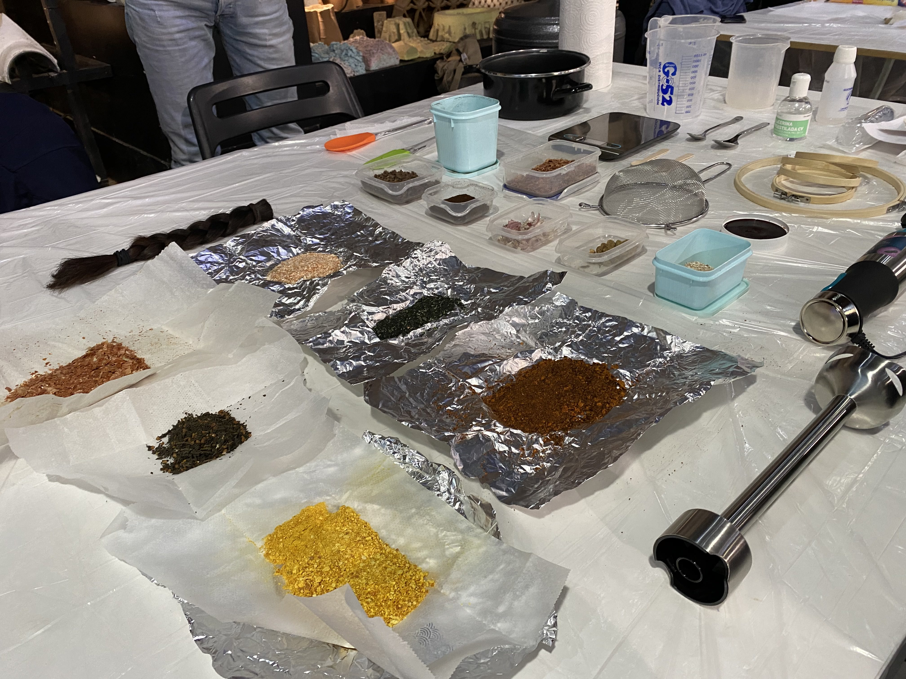
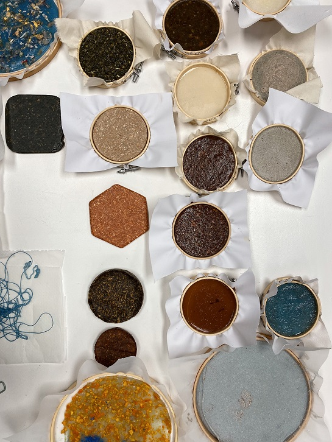
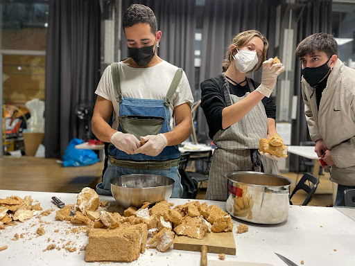

Remixing materials
We were assigned the task of bringing our own waste for hands-on experimentation after learning about several methods of generating biomaterials from food waste. As a group we cleaned, dehydrated in the oven, and combined shrimp shells, tangerine peels, green tea leaves, kelp, yellow onion peels, and kimchi pulp

Angel, Ruben, Vikrant, Busi, and I worked together to combine our resources and test three distinct recipes: agar/gelatin, alginate thread, and pine resin blocks. Borka's nut shells, tangerine peels, and gold mica were immediately added to the agar mixture for the agar preparation. Because the nut shells had some fuzzy textures, we thought they'd be fun to utilize. For the hue, we opted to use tangerine peels and mica. We used a blend of red and blue mica colorants to make the alginate thread, expecting a gradient. Instead, the hues mingled and became purple thread, which was still very nice. Finally, we produced two separate pine resin combinations. We used dried kimchi pulp in one, and hair, kelp, wool, and thread in the other.

Vision of the future
It was very revealing to take part in this class and see what would be considered ‘waste’ (I prefer to use the term ‘byproduct’) in a different lens for a designer. Circularity is a very broad concept and our byproducts can give life to new products in multiple ways, be it from compost or as a building block for a completely new type of material. The possibilities shone to me quite clearly, throughout many classes I always try to think of the application through the lens of an indigenous Guna woman.
In Panama, there is an indigenous group called the Gunas which live on very small islands in the Caribbean in an archipelago called Guna Yala. I have been to their territory many times and the most pressing and clear problem they have is the import of goods that are not native to the islands and cannot be disposed of easily (soda cans or chip packaging for example). I thought of how the learnings of biomaterial production could be translated into the realities of a person living in Guna Yala. It could definitely be very beneficial to them to use the many byproducts they have of their main local food staples (lobster shells and coconuts) to create a range of materials that they could then use for practical purposes in their daily lives or as part of their artcraft.
One of the bigger challenges I could think of were the collection and the scaling processes. It seems very challenging to collect a great amount of additives and process them properly to avoid molding. Also, how could this be done efficiently without incorporating tremendous human labour and in a place where electricity is scarce? Secondly, the logistics of scaling are also a big hurdle. It would require a great deal of organisation and community work to truly make it work for the whole community.
Materials in context
For our remixing materials assignment, I have worked together with Julia on what was to become our design intervention. We both love fungi and thus decided to work with mycelium as the base for our biomaterial experimentation. We believe that mycelium based products have a very wide range of uses, from acoustic and insulation panels, to construction materials, to furniture and much more. The great part about mycelium is that it is also completely biodegradable and can take shape utilising agricultural byproducts.

For our mycelium substrate we used sawdust which is sourced from our local woodwork shop Liken, but we can use any Lignocellulosic material. The substrate is then hydrated (soaked) and sterilised in a pressure cooker. Afterwards, you grab the fungal strain and mix it with the substrate in order for the fungi to colonise the substrate. For this to happen, the fungi must not be competing with other microorganisms for colonisation of the substrate. The ratio between fungi and substrate can vary greatly. With enough time and care, the fungi can colonise a large substrate.
Once the substrate has been fully colonised by the mycelium, the remaining product or “cake” can be broken down into pieces and made to fit in a mold. This is done to achieve whichever shape one intends to give it. The mold is previously sterilised with alcohol to prevent any contamination by foreign microorganisms. Once the mycelium has been broken down into small pieces and made to fit inside the mold, it is then covered tightly with a plastic wrap and taped on the edges to seal it in place. With a sharp object, one perforates the plastic with 3 or 4 holes to allow the mycelium to breathe. It is then kept at a cool room temperature and away from the sunlight.
After a few days, the mycelium should have glued the broken up substrate into the desired shape. Once the right consistency has been attained, the pieces pass on to the oven for the drying phase in which the fungal specimen is killed and the object stops growing.
Additionally I’ve always worked with Vikrant with chitosan as a material experiment. Mycelium gets its strength from chitin, the same stuff that makes crab exoskeleton durable and tough.
Submissions
Final Presentation